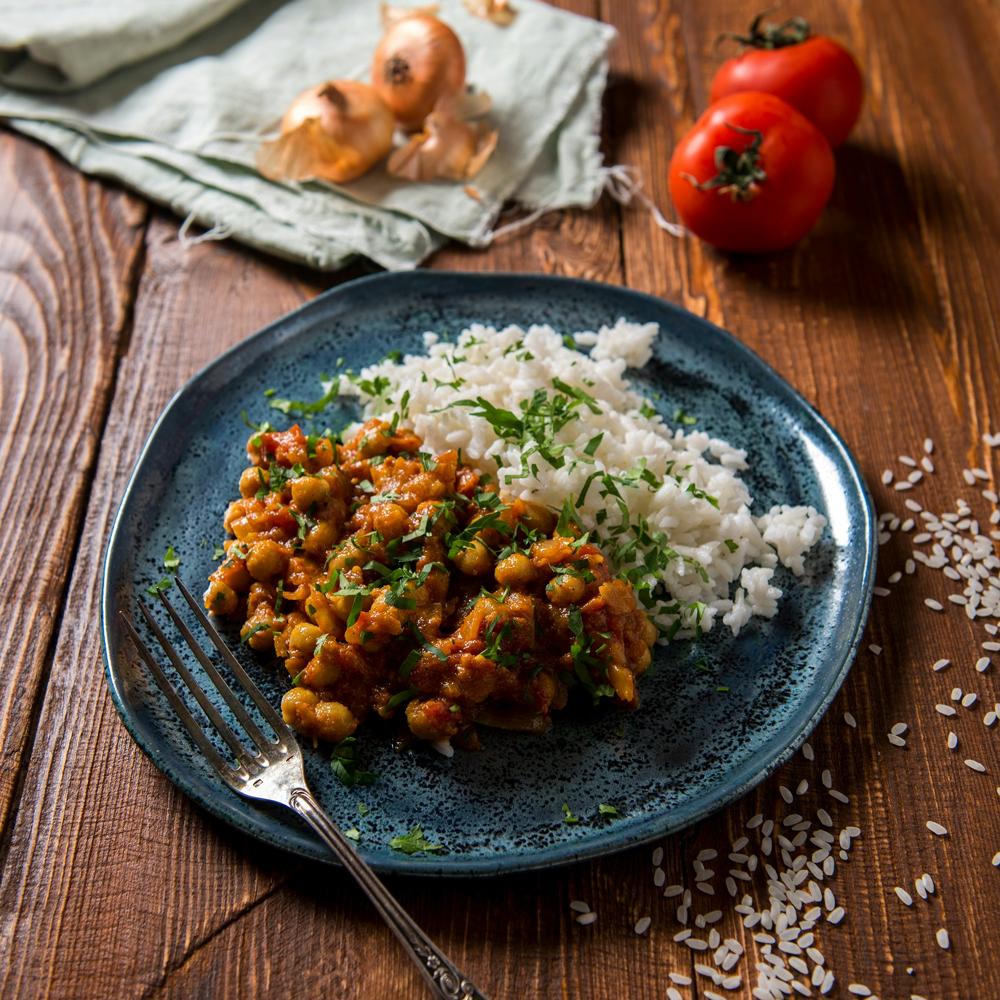

Home
Chana Masala

Ingredients
- 1 medium onion, sliced
- 3 garlic cloves, minced
- 1-2 tbsp curry powder
- 1 tsp cumin
- 15 oz crushed tomatoes
- 13.5 oz coconut milk
- 2 (15 oz) chickpeas, drained and rinsed
- (Optional) cilantro
Steps
- Oil on medium low, medium size pot
- Stir in onion and garlic until translucent ~15 min (add a bit of water if onions get dry)
- Increase heat to medium, add curry and cumin, toast for 1 min
- Add crushed tomatoes, coconut milk and chickpeas
- Stir, particularly the bottom of the pot
- Reduce to low heat
- Simmer under thickened to liking ~10 min